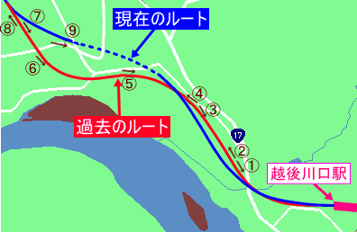
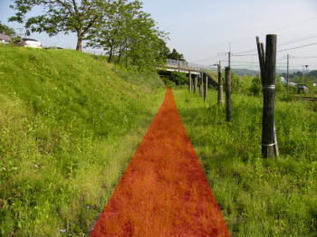
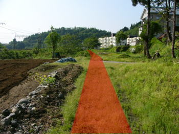
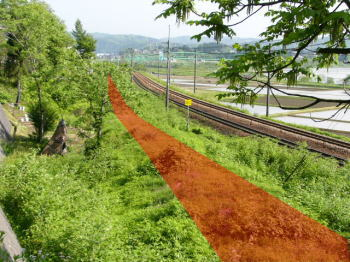
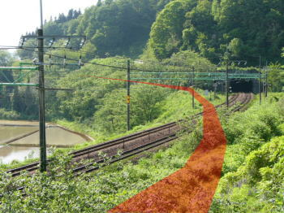
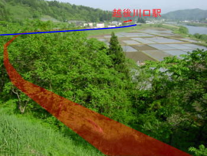
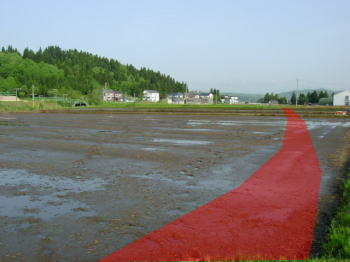
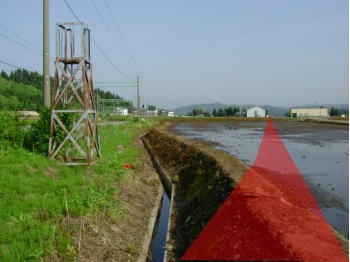
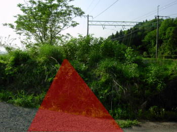
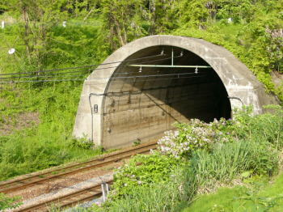

↑番号をクリックするとその地点で撮った画像へジャンプ↑
＊矢印の向きで撮影
|
*越後川口から小千谷に向かう方向で順を追って掲載
*掲載している写真に描いてある赤いラインは旧線の推測位置を示す
*地点6～8にかけ、大規模な農地改良による区画整理により旧線跡は確認できなかった。そのため、地点6～8はかなり推測の度合いが大きいので予めご了承ください。
|
地点1
 |
地点2
 |
| ↑新旧線の分離ポイント付近。右にチラッと見えるのが現在の上越線。奥のガード橋は国道17号。 |
↑地点1で振り返って小千谷方面を撮影したもの。小道が左右を横切っておりこの場所に踏切があった。現在線は立体交差化している。左手に見えるのが現在の上越線。 |
|
↑地図へ ↑ |
地点3
 |
地点4
 |
| ↑旧線の線路は新線に沿う格好でしかれていた。 |
↑小高い山（丘）を迂回するためにカーブを描く |
|
↑地図へ ↑ |
地点5
 |
地点6
 |
| ↑迂回した小高い山（丘）から撮ったもの。草木が生い茂っており、旧線撤去からの月日の長さを感じた。青線は現在の上越線。 |
↑前述のとおり、大規模な農地改良事業による区画整理により旧線跡が確認できなかった場所。よって旧線跡を示す赤色のラインはイメージであるのでご注意いただきたい(下記地点7・8も) |
|
↑地図へ ↑ |
地点7
 |
地点8
 |
| ↑同右上 |
↑新旧線の分離ポイントと思われる付近。 |
|
↑地図へ ↑ |
地点9
 |
←現在のようす。牛ヶ島トンネルで一気に駆け抜けている。こちら側のトンネル出入り口は、かろうじてトンネルに仕立て上げたような高さの土地にある。 |
>> この付近の航空写真 <<
|
↑地図へ ↑
↑ページの先頭へ ↑ |